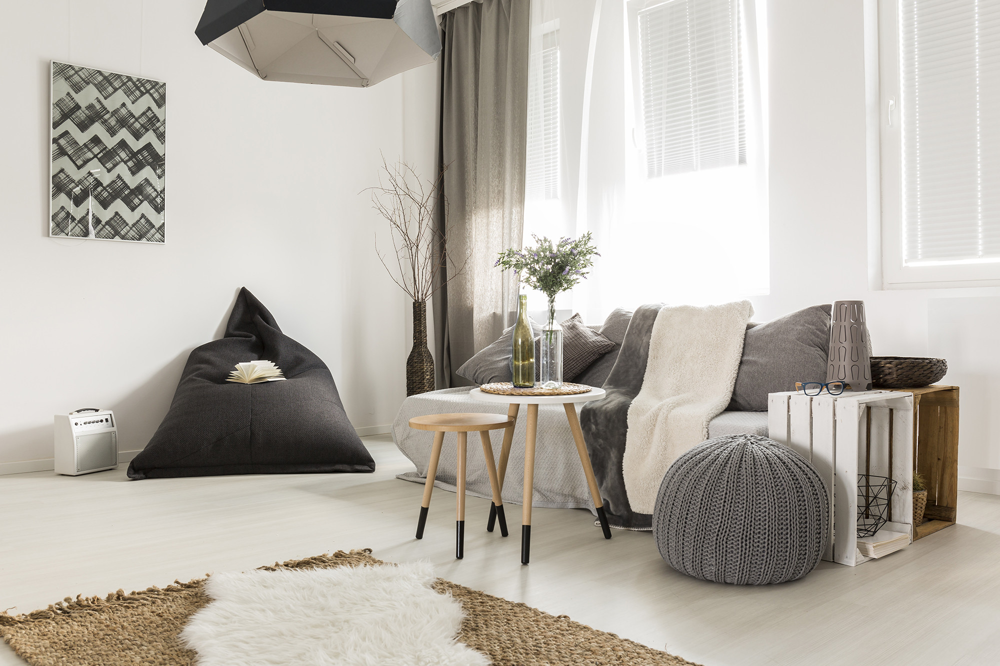
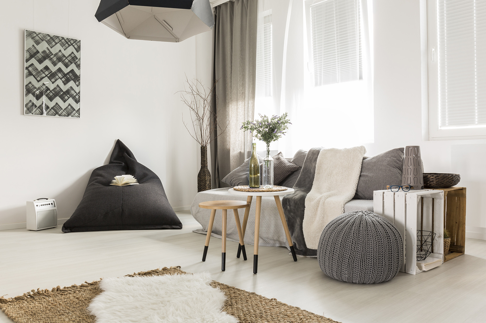

LookBook
Một Thoáng Scandinavian
Dưới những tác động tiêu cực từ COVID-19, ngành Bất động sản tại Việt Nam đã bước vào tình trạng ngủ đông dù đang ở mùa hè, kéo theo đó là sự ảnh hưởng đến các ngành nghề liên quan như: Kinh doanh nội thất và thiết kế nội thất.
Nếu 2019 là năm bùng nổ của nền kinh tế thế giới nói chung và Việt Nam nói riêng thì năm 2020 lại “được-làm-nguội” dưới sự ảnh hưởng của một nhân tố không ngờ đến - Dịch viêm đường hô hấp cấp do chủng mới Virus Corona (COVID-19).
Dịch bệnh COVID - 19 từ những ngày đầu xuất hiện tại Vũ Hán, Trung Quốc đã bước vào giai đoạn nóng hổi khi bùng phát trên phạm vi toàn cầu. Theo thông tin mới nhất của Chính phủ, đã có gần 800.000 ca nhiễm bệnh với hơn 37 nghìn người tử vong đến từ 200 quốc gia, vùng lãnh thổ. Từ các nước châu Á (Hàn Quốc, Nhật Bản,...); Các nước Châu Âu (Ý, Đức, Pháp, Hà Lan, Thổ Nhĩ Kỳ,..) đến Anh; Mỹ,...Và Việt Nam không nằm ngoài sự ảnh hưởng này.

*Thống kê cập nhật đến ngày 31/03/2020 (Báo Tuổi trẻ)
Nắm lấy “thời gian vàng” trong phòng chống dịch, Chính phủ Việt Nam đã ban hành Chỉ thị số 16/CT-TTg: Cách ly toàn xã hội trong vòng 15 ngày kể từ 0 giờ ngày 01 tháng 4 năm 2020 trên phạm vi toàn quốc.
Trước tình hình kéo dài này, nền kinh thế giới nói chung và Việt Nam nói riêng đã chịu nhiều tác động trực tiếp khi thị trường bắt đầu chững lại. Chiều hướng thiệt hại dần trở nên nặng nề hơn theo từng ngày, đặc biệt đối với một số ngành nghề cụ thể: Ngành hàng không, Ngành dịch vụ; Vận tải.
Bên cạnh đó, nếu phân tích trên góc độ kinh tế chúng ta sẽ thấy được sự phát triển của một nền kinh tế luôn phụ thuộc vào khả năng vận động trôi chảy của các mắt xích kết nối qua lại giữa các ngành nghề. Chính vì thế, khi một lĩnh vực cụ thể đã nhận về thiệt hại, chúng ta sẽ không tránh khỏi một trận “càn quét” trên mạng lưới sâu rộng với các ngành nghề liên quan như: Bất động sản; Dây chuyền sản xuất và chuỗi cung ứng; Kết nối thương mại;...
Khảo sát của Ban Nghiên cứu Phát triển Kinh tế tư nhân với hơn 1.200 doanh nghiệp về sự ảnh hưởng của Dịch COVID -19 tới các hoạt động kinh doanh cho thấy: Nếu dịch COVID - 19 tiếp tục kéo dài trong 6 tháng tiếp theo, tỉ lệ phá sản của các doanh nghiệp sẽ nằm ở mức báo động với hơn 74%. Đặc biệt ở các doanh nghiệp vừa và nhỏ lẻ, họ không đủ nguồn vốn để xoay vòng và đắp bù vào các khoản chi phí như: tiền mặt bằng, tiền vay ngân hàng, tiền công nhân viên,...
Dưới những tác động tiêu cực này, ngành Bất động sản tại Việt Nam đã bước vào tình trạng ngủ đông dù đang ở mùa hè, kéo theo đó là sự ảnh hưởng đến các ngành nghề liên quan như: Kinh doanh nội thất và thiết kế nội thất.
Vậy lối đi nào dành cho các doanh nghiệp Kinh doanh và thiết kế nội thất trong thời gian này?
Thập niên mới - con đường mới
COVID-19 tác động trực tiếp và làm thay đổi tâm lý tiêu dùng, từ mua sắm ngoại tuyến chuyển dịch đến trực tuyến. Có thể nói, đây chính là khoảng thời gian hoạt động nhộn nhịp của các sàn thương mại điện tử và dịch vụ mua sắm online.
Như vậy, thay vì bán hàng theo phương cách truyền thống, các nhà kinh doanh nội thất đã có thể củng cố nguồn tiêu thụ và đáp ứng nhu cầu của khách hàng với hình thức online
HNMlà trang thương mại điện tử mua sắm nội thất, giúp bạn biến những trải nghiệm mua sắm trở nên dễ dàng hơn bao giờ hết. Làm việc với 40++ thương hiệu nội thất uy tín đến từ quốc tế và nội địa, cung cấp 5000++ sản phẩm nội thất chính hãng, FITIN hứa hẹn sẽ đem đến cho khách hàng một hành trình vui vẻ từ việc tìm kiếm sản phẩm nội thất yêu thích, đến việc đặt hàng, giao nhận cùng các dịch vụ hậu mãi,...
Không chỉ trong lĩnh vực kinh doanh nội thất bán lẻ, những đơn vị thiết kế và thi công nội thất cũng bắt đầu chuyển mình sang hình thức tư vấn online.
Từ giai đoạn thiết kế đến thi công, các gia chủ luôn tốn không ít thời gian để tìm được những lựa chọn ưng ý. Vì vậy, kể cả khi chúng ta đang bước vào giai đoạn căng thẳng của mùa dịch, vẫn không bao giờ là quá sớm để lên kế hoạch thiết kế nội thất căn hộ. Tư vấn thiết kế online chính là giải pháp chặt đứt sợi dây âu lo của các gia chủ trong bối cảnh Corona tăng cao. Không những thế, lên kế hoạch thiết kế ngay từ bây giờ, các gia chủ còn tiết kiệm được thời gian và kinh phí.
HNMlà đơn vị thiết kế và thi công nội thất trọn gói với một đội ngũ chuyên gia sẵn sàng tư vấn thiết kế MIỄN PHÍ theo yêu cầu. Các gia chủ nhận ngay bản thiết kế 3D chỉ trong 24 giờ, đồng thời có thể lựa chọn và thay đổi nội thất kết hợp từ nhiều thương hiệu. Gia chủ chính là tận dụng thời gian rãnh để xem xét và căn chỉnh ngân sách dựa trên báo giá chi tiết. Không chỉ thế, với gói nội thất toàn diện, các chuyên gia đến từ FITIN sẽ luôn đề xuất và đưa ra những giải pháp hỗ trợ tài chính phù hợp.
“Khi Trung Quốc hắt hơi, cả thế giới cảm lạnh”. Nhưng dù dịch bệnh có bùng phát đến đâu thì vẫn luôn có đội ngũ y bác sĩ tận tình nghiên cứu và bảo vệ sức khỏe toàn dân. Cũng như đối với tình hình kinh tế hiện tại, chúng ta cuối cùng cũng sẽ tìm được mối lối đi đúng đắn và vực dậy nền kinh tế đã chịu nhiều tổn hại này.
Tin Tức Gần Đây
Tân Trang Nhà Cửa Với Công Nghệ Showroom 3D
Cùng FITIN theo dòng lịch sử khám phá quá trình phát triển của sản phẩm nội thất, từ thời Ai Cập cổ đại cho đến sự phát triển theo phong trào Bauhaus.
Trong quá khứ, sản phẩm nội thất nói chung và ghế ngồi nói riêng được xem là minh chứng hiện hữu cho sự giàu có, quyền lực nhưng theo sự phát triển của nhu cầu sử dụng mà ghế ngồi dần trở nên phổ biến hơn trong đời sống. Giữa những năm 1919 và 1933, phong trào Bauhaus (nơi khởi tạo chủ nghĩa thiết kế công năng) đã tái thiết lập hệ tư tưởng về nội thất: loại bỏ những chi tiết không cần thiết, thay vào đó là các ưu tiên về công năng, màu sắc trung tính cũng như hình dáng thanh mảnh, gọn gàng.

Trong suốt đầu thế kỷ XVIII ở Paris, sau một giai đoạn lên ngôi của Baroque và Rococo, giới thượng lưu trong xã hội bây giờ bắt đầu chối từ sự vương giả có phần cầu kỳ và tìm kiếm điều gì đó thú vị hơn. Đây của là lý do chính khiến chủ nghĩa tối giản bắt đầu nhen nhóm ra đời. Chủ nghĩa tối giản Minimalism đã thực sự vươn lên đến đỉnh cao giữa thế giới nghệ thuật tại New York vào những năm 1960.
Người Hy Lạp cổ đại thường không chú trọng quá nhiều đến sự đa dạng của các sản phẩm nội thất nhưng lại vô cùng tỉ mẩn trong cách tạo ra chúng. Chiếc ghế với tên gọi Kline vô cùng nổi tiếng thường dùng để ngả lưng khi ăn là minh chứng hùng hồn nhất cho ý kiến này. Đó là một lời mở đầu khá vừa vặn để đến với thời kỳ sản phẩm Mid-century lên ngôi, chúng mang gần như trọn vẹn các yếu tố công năng, sang trọng của quá khứ nhưng lại được thể hiện trong hình hài đơn giản và rất hiện đại. Sản phẩm nội thất trong thời kỳ này thường chỉ mang 2 màu sắc: màu vải rực rỡ và màu gỗ trầm ấm. Một yếu tố khác khiến Mid-century trở nên cực kỳ phổ biến là nhờ chi phí sản xuất của chúng rất vừa phải.


Nội thất thời kỳ Trung Cổ thường khá dễ để nhận biết với những đường nét chạm khắc công phu, và được vị KTS vĩ đại Frank Lloyd Wrightwho tiên phong đưa những thiết kế mang dạng thức tròn, mịn màng vào hình khối, vật liệu và dựa vào đó để định hình thế giới thẩm mỹ hiện đại.

Nội thất trong thhi kỳ Phục Hưng bị ảnh hưởng mạnh mẽ bởi những câu chuyện cổ xưa, đòi hỏi cao về chất lượng sản phẩm thiết kế. Trái ngược hoàn toàn với Phục Hưng, Art Deco đem đến cuộc sống thực sự hiện đại vào những năm 1920-1930 bằng tính chất sang trọng và tinh tế qua sự kết hợp của vật liệu chrome, gỗ gụ, kính và sơn mài tối màu trong nội thất, kiến trúc.

Thiết kế nội thất là lĩnh vực “động” luôn đòi hỏi sự sáng tạo và khả năng thích ứng với từng thời kỳ lịch sử. Chính vì thế, để tạo nên tên tuổi cho bản thân, mỗi một nhà thiết kế đều phải có cho riêng cho mình một cách thức truyền tải thông điệp. Và đây là Top 5 những bậc thầy nổi tiếng trong lĩnh vực nội thất.
1. KELLY WEARSTLER
Tạp chí The New Yorker đã đặt cho nhà thiết kế người Mỹ Kelly Wearstler danh hiệu “bà chủ tịch của hội thiết kế nội thất West Coast”. Sau khi thành lập công ty thiết kế nội thất của riêng mình vào giữa những năm 1990, cô tiếp tục phát triển sự nghiệp như một tác giả, blogger, chuyên gia thời trang, nhà trang trí hay đặc biệt hơn: Nàng thơ của khách sạn Viceroy và Tides. Không cần bất kỳ lời giới thiệu hoa mỹ nào, Kelly Wearstler vẫn nổi tiếng với hương vị thiết kế riêng biệt từ kết cấu táo bạo đến màu sắc rực rỡ.

Công trình thiết kế Malibu Beach Residence của Kelly Wearstler
2. JEAN-LOUIS DENIOT
Jean-Louis Deniot là một tên tuổi nổi bật trong top 100 các nhà thiết kế nội thất giỏi nhất thế giới trên tạp chí ELLE Decor và AD. Anh đặt trọng tâm thiết kế vào việc tạo ra bầu không khí hơn là thỏa mãn tầm nhìn trực quan.

Công trình thiết kế NYC - Chelsea của Jean-Louis Deniot
Trang trí nội thất là sân chơi nơi anh ấy làm “chủ nhà”, chính vì thế, Jean-Louis Deniot luôn thỏa sức thể hiện những dấu ấn cá nhân và điểm mạnh sáng tạo.
Được công nhận trên toàn thế giới về phong cách nội thất chiết trung và biểu tượng, Jean-Louis Deniot đem đến những “bản hòa tấu” cho các công trình nội thất của mình.
3. RYAN KORBAN
Ở độ tuổi 30, Ryan Korban đã tạo dựng được tên tuổi cho bản thân. Chính nhờ quan điểm mạnh mẽ và một gu thẩm mỹ đặc trưng, Ryan Korban đã dẫn đường cho những thiết kế truyền thống tiếp cận với thế hệ trẻ.

Công trình Upper Side Residence của Ryan Korban
4. KELLY HOPPEN
Kelly Hoppen là một nhà thiết kế nội thất người Anh có tên tuổi lớn nhất nhì trong giới thiết kế nội thất thế giới. Cô là tác giả và chủ sở hữu của Kelly Hoppen Interior. Các công trình của nhà thiết kế gốc Do Thái và Ailen không chỉ tập trung vào khách sạn hay nhà ở mà còn đào sâu vào lĩnh vực thiết kế du thuyền cho khách hàng tư nhân hay các dự án thương mại trên toàn thế giới như nhà hàng, văn phòng và máy bay.

Công trình Private Home của Kelly Hoppen
5. PHILIPPE STARCK
Philippe Starck là người sáng tạo, nhà thiết kế và kiến trúc sư người Pháp nổi tiếng trên thế giới. Các thiết kế độc đáo của ông đều ưu tiên tính công năng hơn vẻ đẹp mỹ thuật. Ổng nổi tiếng với những thiết kế khách sạn như một tác phẩm nghệ thuật vượt thời gian, một biểu tượng góp phần tạo nên diện mạo mới cho cảnh quan thành phố.

Công trình của Philippe Starck
Bạn có thể bỏ lỡ nhiều thứ trong cuộc sống, tỷ như chuyến xe buýt đi rồi vẫn còn chuyến kế tiếp. Nhưng bạn không thể tìm lại những ấm nóng từ bữa cơm gia đình một khi nó đã nguội lạnh.
Một bữa cơm gia đình có ba, có mẹ và những người thân thương là nếp sinh hoạt truyền thống mà người Việt vẫn còn gìn giữ qua nhiều năm tháng. Dù chúng ta đi đâu, làm gì, đến cuối ngày cũng đều trở về nhà cùng nhau quây quần bên mâm cơm nóng hổi.

“Người lớn” chúng ta đứng giữa thế giới thực tại rộng lớn, đối mặt với quỹ thời gian 1 ngày chỉ 24 giờ thì một bữa cơm ăn cùng các thành viên trong gia đình đôi khi lại trở thành một điều xa xỉ.
Thế nhưng!
Bạn có thể bỏ lỡ nhiều thứ trong cuộc sống, tỷ như chuyến xe buýt đi rồi vẫn còn chuyến kế tiếp. Nhưng bạn không thể tìm lại những ấm nóng từ bữa cơm gia đình một khi nó đã nguội lạnh.
Những nghiên cứu đến từ The National Center On Addiction And Substance Abuse at Columbia University (CASA) cho thấy tầm quan trọng của bữa cơm gia đình trong cuộc sống, không chỉ cho người lớn mà còn đặc biệt hơn với trẻ em.

Bữa cơm là giây phút hiếm hoi của một ngày mà cả nhà được gặp nhau để nói chuyện, chia sẻ cảm xúc và kết nối với nhau. Những đứa trẻ có ít hơn 3 lần/1 tuần ăn cùng gia đình sẽ để lại những phản ứng không tốt trong sinh hoạt hằng ngày. Trong khi những đứa trẻ ăn uống thường xuyên cùng gia đình (5-7 lần/1 tuần) có biểu hiện tốt hơn.

Nghiên cứu đến từ Trường Đại học Stanford cho thấy, Bữa cơm gia đình giúp kiểm soát cân nặng và cải thiện sức khỏe. Nếu chỉ ăn một mình, bạn có khuynh hướng ăn qua loa cho qua bữa hoặc lười biếng nấu nhiều món dẫn đến việc thiếu hụt đi nguồn dinh dưỡng cần thiết. Trẻ em khi ăn cùng gia đình đặc biệt có thiên hướng lựa chọn thực phẩm dinh dưỡng như rau củ, trái cây thay vì đồ chiên, béo.
Không riêng về vấn đề giao tiếp và bảo vệ sức khỏe, Bữa cơm gia đình là một cách để chúng ta học tập lễ nghi. Thể hiện qua những hành động kính trên nhường dưới, mời ông bà, bố mẹ ăn cơm hay việc dạy trẻ cách chia sẻ công việc trong gia đình: Giúp bố mẹ dọn bàn ghế, rửa chén,..

Sau tất cả những ích lợi này thì việc ngồi lại và ăn cùng nhau sẽ tạo nên một truyền thống gia đình đáng quý. Không chỉ là vấn đề thời gian, bữa cơm là khi chúng ta cùng nhau tạo nên những hồi ức tươi đẹp
Khám phá câu chuyện tối giản qua thương hiệu yêu thích
Phong cách Tối Giản không biết tự khi nào đã bắt đầu len lỏi vào cuộc sống thường nhật, để rồi đến một ngày, khi chúng ta chợt nhận ra, Tối Giản đã hiện diện khắp mọi ngóc ngách, trở thành một phong cách mang tầm ảnh hưởng toàn cầu.
Không phải là kiểu mẫu bỗng dưng được người đời ca tụng, Tối Giản là câu chuyện đời thực giữa những thế giới vuông tròn chồng chéo. Bắt đầu từ triết lý “Ít là nhiều” - “Less is more” của vị kiến trúc sư huyền thoại Ludwig Mies Van Der Rohe, phong cách Tối Giản luôn truyền cảm hứng để các gia chủ nhận ra giá trị của cuộc sống từ những điều bình dị nhất.
Cùng Make My Home kể lại câu chuyện thường ngày của một gia chủ tối giản.
Bạn sở hữu một căn hộ nho nhỏ. Sau 8 tiếng mỏi mắt nhìn màn hình, bạn băng qua dòng người hối hả để trở về nhà. Khoảnh khắc cánh cửa đóng chặt, ngăn cách bạn với những ồn ào ngoài kia, bạn bỗng tìm thấy sự yên bình ở nơi bạn gọi là nhà.
Ngay từ đầu câu chuyện, chúng ta đã thấy một bức tranh tương phản giữa cuộc sống trong nhà và ngoài phố, là yên bình - nhộn nhịp, là thư giãn - căng thẳng. Nếu thế giới bên ngoài đôi lúc khiến bạn mệt mỏi, Tối Giản chính là một “công cụ” giúp điều chỉnh lại cán cân dường như đã lệch hướng.
Ngay từ lúc đặt chân vào nhà, bạn dễ dàng sắp xếp giày với một chiếc kệ đơn giản. Chìa khóa, áo khoác, váy chống nắng, ô dù,...tất cả những vật linh tinh cũng đều được cất gọn gàng. Bạn yên tâm khi ngày mai thức dậy không cần chạy quanh nhà chỉ để tìm chìa khóa xe.

Bạn thật hài lòng khi đã tìm được một chiếc kệ giày tích hợp tối đa công năng. Kể cả vào một ngày đẹp trời nào đó, bỗng nhiên bạn muốn đổi một chiếc kệ giày mới, thì chiếc kệ cũ vẫn còn rất tốt để tận dụng cho những tiện ích khác.

Bạn cảm thấy vui vẻ khi bước vào một căn phòng khách gọn gàng, sạch sẽ, không bị choáng ngợp với những thiết kế “đậm đà” sắt thép. Bạn ngồi xuống chiếc sofa êm ái, uống một cốc nước thanh giọng.

Để căn nhà không quá tĩnh mịch, bạn bật TV lên và chọn chương trình ca nhạc yêu thích. Thoải mái biết bao khi được vây quanh với những sắc màu trung tính, nhẹ nhàng của từng món nội thất.

Sau một vài phút nghỉ ngơi, bạn bước vào phòng ngủ để thay bộ y phục ở nhà thoải mái. Ngắm nghía mình trong gương và tặng cho bản thân một nụ cười vui vẻ.

Ăn cơm, tắm rửa, xem TV,...bạn trải qua tất cả những hoạt động thường nhật. Trước khi đi ngủ, bạn quyết định ngồi vào bàn làm việc kiểm tra xem ngày mai sẽ học gì, làm gì?


Vẫn còn kịp giờ để đọc một cuốn sách! Bạn với tay lên kệ lấy xuống cuốn sách còn đang đọc dở. Thật vui vẻ khi dễ dàng tìm ngay cuốn sách được đặt ngăn nắp trên kệ.


Tối Giản là khi bạn trả lời được câu hỏi: “Món đồ này có thể tận dụng cho những mục đích gì?”. Bạn không còn vò đầu bứt tai mỗi ngày với một căn phòng lộn xộn, cũng không còn đau nhức thị giác khi phải nhìn quá nhiều gam màu đậm cùng sắt thép công nghiệp.
Một ngôi nhà theo phong cách Tối Giản sẽ không bao giờ trở thành những thứ cũ kỹ theo năm tháng. Tối Giản sẽ tạo nên chuẩn mực mới cho cuộc sống hiện đại.
Đặc biệt, từ ngày 12/4 - 22/4, Make My Home đang có 1 Minigame giveawaymột bộ bàn ghế 10 triệu. Cùng Make My Home làm mới góc làm việc để Work From Home thật tràn đầy năng lượng và hoàn thành công việc tốt nhé!
Bước 1:
Chụp 01 - 05 tấm ảnh hoặc quay 01 clip liên quan đến góc làm việc của bạn. Cho dù là trên chiếc giường hay bàn xếp đều đáng được trân trọng.
Bước 2:
Đăng hình trên trang cá nhân, để ở chế độ công khai, tag 3 người bạn để cùng tham gia thử thách, chia sẻ câu chuyện làm việc ở nhà, kèm hashtag #Makemyhomevn #MinyourHouse #WorkfromHomewithmakemyhome
-------------------------------
GIẢI THƯỞNG CHO HOMIES KIÊN CƯỜNG:
Một bộ sản phẩm working space:
• 1 bàn làm việc Gohi: trị giá 5.450.000 VND
• 1 Ghế QINO: trị giá 2.190.000 VND
• 1 đèn Solo Hasi: trị giá 1.890.000 VND
Hoặc người thắng cuộc có thể tùy chọn sản phẩm bàn, ghế, đèn mình thích từ Make My Home với giá trị tương đương (hoặc thấp hơn).
GIẢI THƯỞNG CHO HOMIES MẠNH MẼ:
• 5 E-gift Voucher Make My Home trị giá: 200.000, giảm giá trực tiếp khi mua hàng tại Make My Home.
Vào ngày 23/4/2020, Make My Home sẽ tổng hợp, trao giải cho cá nhân tham gia đúng thể lệ:
GIẢI HOMIES KIÊN CƯỜNG:
Make My Home sẽ chọn một bài đăng có câu chuyện thú vị nhất để đăng tải lên fanpage Make My Home và trao giải.
GIẢI HOMIES MẠNH MẼ:
Những bài đăng có lượt tương tác cao nhất sẽ được Make My Home tổng hợp và trao giải 5 bài có điểm cao nhất:
• 1 react = 1 điểm
• 1 comment = 2 điểm
• 1 share = 5 điểm
• Order here: http://makemyhomevn.com
Indochine là sự pha trộn giữa 2 nền văn hóa trái ngược nhưng ngẫu nhiên không tạo nên tương phản, ngược lại mở ra một triết lý mỹ thuật riêng biệt.
Một vùng văn hóa nơi Indochine khởi sinh
Danh từ “Indochine” trong ngôn ngữ Pháp dùng để chỉ một khu vực địa lý thuộc về bán đảo Đông Dương/ bán đảo Trung Ấn. Đây là tên gọi thịnh hành từ thế kỷ XIX cho đến những thay đổi về chính trị, văn hóa, xã hội đã trở thành Đông Nam Á của thế kỷ XXI - nơi giao hòa giữa Việt Nam, Lào, Campuchia, Thái Lan, Myanmar, Malaysia.
Lấy tên gọi từ vùng đất khởi sinh, phong cách Indochine (Phong cách Đông Dương) luôn để lại một dấu ấn đậm đà bản sắc khó phai mỗi nơi chúng đi qua.
Chặng đường lịch sử Indochine đi qua
Phong cách Indochine bắt đầu “phôi thai” từ khi Pháp đặt chân vào khu vực Đông Nam Á những năm 1893-1954. Suốt chặng đường lịch sử đằng đẵng chịu tác động từ đường lối phác họa nghệ thuật của Pháp, cho đến lúc ảnh hưởng Pháp dần suy yếu tại Việt Nam, phong cách Indochine mới chính thức ra đời như một phương cách “lấy lòng” dân chúng khi tạo nên các công trình thiết kế nghệ thuật tôn vinh văn hóa bản địa.
Ernest Hébrard - kiến trúc sư người Pháp nổi tiếng nhận giải thưởng Prix de Rome là “cha đẻ” của phong cách thiết kế chiết trung Á - Âu đại diện cho 2 nền văn hóa lớn của nhân loại: phương Đông - Phương Tây mà ông gọi là “phong cách kiến trúc Đông Dương” (Style Indochinois).
Những phác họa Indochine dần đi vào hồi kết trước năm 1960 và bắt đầu có xu hướng trở lại những năm gần đây.

Nội Thất Đông Dương Cho Căn Hộ Sài Gòn South Residences 97m2 mang đến một cảm giác hoài cổ. Cũng chính nhờ giá trị văn hóa truyền thống và bề dày lịch sử, dù đặt lên bàn cân cùng những chuẩn mực thiết kế khác, Indochine vẫn không bao giờ thua kém.
Thẩm mỹ chiết trung của kiến trúc Indochine
Phong cách Indochine tinh tế kết hợp kiến trúc Tân Cổ Điển Pháp và các chất liệu truyền thống Á Đông. Đây là sự hòa trộn giữa 2 nền văn hóa trái ngược nhưng ngẫu nhiên không tạo nên tương phản, ngược lại mở ra một triết lý mỹ thuật riêng biệt. Có thể thấy, kiến trúc sư đã rất dụng tâm khi “nhiệt đới hóa” các bản vẽ Pháp để phù hợp với môi trường khí hậu nóng ẩm cũng như văn hóa Việt Nam.
Đặc điểm nội thất phong cách Indochine
Thiết kế Indochine lấy gam màu trung tính như: vàng nhạt, kem sữa, nâu, trắng làm khung nền cơ bản kết hợp cùng sắc đậm ấm nóng như: vàng cam, vàng đất, tím, đỏ, xanh dương đậm… Từ đó, lột tả những khối hình đặc trưng nhất của vùng lãnh thổ nhiệt đới ẩm gió mùa.

Gỗ, tre, mây, cói, gạch…là các vật liệu đến từ thiên nhiên. Và một vùng lãnh thổ lấy thiên nhiên làm gốc sẽ không thể thiếu vắng những chất liệu này trong cuộc sống hằng ngày.


Họa tiết Indochine chú trọng cách điệu với:

Hoạ tiết hình chữ nhật: phác họa theo lối chữ Hán được cách điệu đơn giản thành Phúc, Lộc, Thọ, Hỷ.
Nội thất phong cách Indochine là một bản hòa âm giữa chất liệu, màu sắc, hoa văn họa tiết.
Đó là những bộ bàn ghế gỗ hay những chiếc phản, sập gụ đậm chất Á Đông.

Hay phụ kiện trang trí từ mây, tre cói quen thuộc trong văn hóa bản địa.
Đông Dương truyền thống và Pháp Tân Cổ Điển đặt cạnh nhau đã tạo nên sự đồng điệu cho những tâm hồn yêu thích cái đẹp toát lên từ bản sắc văn hóa. Khi Đông Tây kết hợp, dù bạn là ai cũng sẽ ngồi lại và thưởng thức.
THIẾT KẾ CÙNG FITIN ĐỂ NHẬN NGAY 25% TRỌN GÓI NỘI THẤT CĂN HỘ SAIGON SOUTH RESIDENCES
•Tư vấn thiết kế trực tuyến Miễn Phí theo yêu cầu.
Ngoài ra, bạn vẫn có thể đến văn phòng trực tiếp trao đổi cùng chuyên gia nội thất FITIN.
•Khám phá thiết kế 3D đẹp chỉ với vài click chuột.
•Tùy biến thiết kế và nhận ngay bản thiết kế 3D trong 24 giờ.
Bản báo giá chi tiết đi kèm để bạn luôn biết chính xác ngân sách của các thiết kế được chọn.
•Lựa chọn & thay đổi nội thất dễ dàng với hơn 3000 sản phẩm chất lượng.
•Nhận ngay 25% ưu đãi cho gói nội thất căn hộ Saigon South Residences, áp dụng đến hết 30/4/2020.
Tranh treo tường đã và đang mở rộng thị trường với nhiều kích cỡ, kiểu loại phân bố đa dạng: Từ Tranh vải canvas, Tranh gỗ đến Tranh sơn dầu và xu hướng gần đây là Tranh sắt. Vậy Tranh Sắt treo tường - Là hoa mỹ hay đậm chất nghệ thuật?
Khi không gian nhà đã hoàn thiện đầy đủ nội thất nhưng vẫn gợi đâu đó cảm giác nhạt nhẽo, có phải bạn đang nói đến một căn hộ với những bức tường lớn và trống vắng? Bạn muốn sắp xếp tranh treo để lấp đầy mảng tường đơn sắc nhưng vẫn còn loay hoay trong việc quyết định? Hãy để Fitin gợi ý thêm với ý tưởng Tranh Sắt treo tường.
Tranh treo tường đã và đang mở rộng thị trường với nhiều kích cỡ, kiểu loại phân bố đa dạng: Từ Tranh vải canvas, Tranh gỗ đến Tranh sơn dầu và xu hướng gần đây là Tranh sắt. Vậy Tranh Sắt treo tường - Là hoa mỹ hay đậm chất nghệ thuật?
Nghệ thuật hay hoa mỹ thật ra được quyết định dựa trên mức độ hòa hợp giữa tranh và tổng thể không gian. Nếu bạn đang sở hữu một căn hộ nhỏ gọn, theo phong cách tối giản, tranh sắt nghệ thuật chưa hẳn là sự lựa chọn tốt. Ngược lại, bạn yêu thích kiểu cách Retro, Bán cổ điển hay Tân cổ điển, Tranh sắt sẽ đánh bật lên sự hào hoa, lộng lẫy cho không gian nhà ở.
Trước khi đi vào lựa chọn, hãy suy nghĩ về phong cách nội thất bạn đang hướng đến, cân nhắc diện tích bức tường và khoảng trống dành cho tranh treo. Hãy nhớ, Tranh sắt không phải hoa mỹ mà là “nét chạm trổ quý phái”.
Cùng chiêm ngưỡng Bộ Sưu Tập Tranh Sắt Nghệ Thuật đến từ HNM


Đừng quên một số lưu ý khi treo tranh:
Chất lượng tranh sắt được đảm bảo trong bao lâu?
Nếu bạn đang e ngại việc Tranh sắt sẽ trở nên hoen rỉ sau một khoảng thời gian sử dụng thì ngay lập tức bạn có thể quẳng gánh lo đi và tập trung vào việc thiết kế. Những sản phẩm tranh sắt đều được xử lý qua công nghệ cao để bảo vệ bề mặt kim loại, chống lại ăn mòn từ không khí.
Tranh Sắt nghệ thuật chính là xu hướng thịnh hành và có thể áp dụng dễ dàng cho mọi không gian, từ nhà ở, chung cư đến biệt thự cao cấp, resort. Thay vì những bức tranh sơn dầu thông thường, hãy thử biến đổi và lấp vào khoảng trống linh hồn của nghệ thuật - Tranh sắt treo tường.
Thiết kế phòng cho trẻ không hẳn dễ khi phải nắm bắt được sở thích của con đồng thời phải tổng hòa phong cách cùng toàn thể ngôi nhà. Nhưng đây không phải là nhiệm vụ “bất khả thi”. Đặc biệt là khi bạn đã có FITIN. Cùng tham khảo 3 mẫu thiết kế phòng đầy sáng tạo để ứng dụng khi xây dựng kết cấu nội thất nhà ở
Trẻ em rồi cũng đi đến một giai đoạn của sự trưởng thành, đánh dấu bởi những thay đổi tâm sinh lý mà các bậc phụ huynh không thể nắm bắt được. Ở giai đoạn này trẻ đặc biệt đã có những chính kiến của bản thân, thích xây dựng thế giới cho riêng mình hay nói cách khác, trẻ đã đến lúc muốn được “ra ở riêng”.
Trong thời khắc này, một câu hỏi được đặt ra nếu các bậc phụ huynh muốn đi vào thế giới nội tâm của con. Một hành động đơn giản nhưng trực tiếp và hiệu quả: Bắt tay vào việc thiết kế phòng cho trẻ.
Thông qua việc lựa chọn phong cách, kết cấu, chất liệu sử dụng,... các bậc phụ huynh có thể nắm bắt được sở thích, tâm lý của con. Trò chuyện, lắng nghe, thấu hiểu là những hành động đơn giản nhưng cốt lõi để trẻ cảm nhận được sự tôn trọng và thành tựu khi xây dựng thế giới của riêng mình. Ngược lại, áp đặt ý kiến của phụ huynh vào quá trình này sẽ khiến trẻ trẻ phản kháng và để lại dấu vết tự ti khi đưa ra chủ kiến của bản thân.
Có thể thấy, việc thiết kế một căn phòng cho trẻ không hẳn là dễ dàng. Các bậc phụ huynh phải nắm bắt được sở thích của con, đồng thời phải biết tổng hòa phong cách của phòng cùng nhịp điệu của toàn thể ngôi nhà. Đừng lo lắng! Dù là khó khăn, đây vẫn chưa hẳn là nhiệm vụ “bất khả thi”. Đặc biệt là khi bạn đã có FITIN. Cùng tham khảo 3 mẫu thiết kế phòng đầy sáng tạo để ứng dụng khi xây dựng kết cấu nội thất nhà ở.
Thế giới của những chuyến phiêu lưu
Trẻ em luôn có một trí tưởng tượng phong phú được truyền cảm hứng từ những câu chuyện kể và phim hoạt hình. Dành cho những bé con thích phiêu lưu, hãy tô vẽ một bức tường với những nhân vật hoạt hình cùng vũ trụ ngàn sao như đang kể lại một cách sống động nhất câu chuyện về “Cuộc phiêu lưu của Tin Tin”; “Cậu bé Rừng xanh”; “Hoàng tử bé”,...

Nếu con trẻ có đôi phần thích leo trèo, bạn có thể xây dựng một không gian vui chơi thu nhỏ trong chính căn phòng ấy. Lắp đặt 1 chiếc lều nhỏ trong phòng sẽ biến những câu chuyện dã ngoại và những phiêu lưu trở thành sự thật.

Khám phá thế giới động vật và khoa học
Ở tất cả những căn phòng của trẻ, bức tường luôn là nơi để lại những ấn tượng sâu đậm nhất. Tranh vẽ tường sẽ biến căn phòng trở thành một sân chơi thật thụ. Nếu trẻ thích đọc những sách, ảnh, phim về khoa học và thế giới động vật, một bức tường với tranh treo khủng long Tyrannosaurus sẽ khiến trẻ thích thú.

Phác họa những khung cảnh ấn tượng từ bộ phim "Toy Story"; "Cậu bé ngoài hành tinh" cùng tranh tường.

Nhẹ nhàng và dịu êm
Ngược lại với sự năng động và cá tính là nhẹ nhàng và dịu êm. Một căn phòng với tông màu pastel chủ đạo cùng các vật trang trí đơn giản, không quá bắt mắt sẽ thể hiện sự khác biệt nội tâm và tính cách của trẻ so với những căn phòng phiêu lưu.


Bên cạnh đó, giường tầng cũng là một trong những ý tưởng tốt khi đưa vào thiết kế phòng cho nhà có 2 trẻ. Không chỉ tiết kiệm không gian đồng thời còn nối kết tình cảm khi anh em/ chị em được ngủ cùng nhau.


Với những hành động nhỏ, các bậc phụ huynh đã có thể hoàn thành giấc mơ to to của con trẻ. Từ đó chắp cánh cho những trí tưởng tượng bay xa và tăng cường khả năng sáng tạo, tư duy của con.
Bài viết được xem nhiều:
• Phác Họa Tân Cổ Điển - Một Saigon South Residences Đẹp Vượt Thời Gian
Khi bạn cảm thấy nhịp đập hạnh phúc của con tim, đó là lúc bạn chân chính lĩnh ngộ được bí thuật đến từ Hygge, cũng có nghĩa bạn đã thành công khi ứng dụng phong cách Scandinavian vào thiết kế nội thất.
Người Scandinavia dù sinh sống tại vùng Bắc Âu lạnh giá những vẫn luôn cảm thấy ấm áp - sự ấm áp đến từ tận con tim. Có lẽ chính vì họ đã lĩnh ngộ được bí thuật hạnh phúc thông qua lẽ sống Hygge. Cùng FITIN khám phá nghệ thuật hạnh phúc qua từng thiết kế Scandinavian của căn hộ Central Premium.
Nằm tại Trung tâm hành chính Quận 8 với ngã 4 huyết mạch, Central Premium chính là dự án vàng với quy mô lớn được rất nhiều cư dân đón đợi
Thông tin dự án:
• Dự án: Central Premium
• Địa chỉ: 854 - 856 Tạ Quang Bửu, Phường 5, Quận 8, Tp.Hồ Chí Minh.
• Tổng diện tích dự án: 63.550 m2 bao gồm diện tích xây dựng căn hộ và xây dựng khu vực kinh doanh
• Tổng số căn hộ Central Premium: 335 căn hộ
• Diện tích căn hộ thay đổi linh hoạt từ 4773m2 - 9247m2 theo từng loại căn hộ : 1 phòng ngủ, 2 phòng ngủ, 3 phòng ngủ.

Thiết kế 3D thực hiện bởi chuyên gia
Nơi nào bạn tìm thấy hạnh phúc, nơi đó chính là nhà.
Bước đến thời đại công nghiệp 2020, phong cách sống Hygge sẽ xoa dịu nhịp đập mạnh mẽ và hỗn loạn, làm mềm những cứng rắn từ sắt thép, để bạn có thể tìm thấy bình yên, thư giãn tại nơi bạn gọi là nhà.
Nghệ thuật hạnh phúc “hygge” qua từng thiết kế Scandinavian
Người Scandi đặc biệt giữ vững phong cách sống khỏe mạnh từ tinh thần đến thể chất thông qua việc sắp xếp nội thất nhà ở.
Họ cân nhắc tất cả yếu tố ánh sáng trước khi bắt đầu đưa tay vào việc thiết kế. Chính vì vậy, bất kể đó là phòng khách, phòng bếp hay phòng ngủ, ánh sáng vẫn luôn hiện diện như một “thành viên” không thể thiếu. Đây vốn dĩ chẳng phải là điều gì khó hiểu. Vì có trải qua những ngày đông lạnh, bạn mới trân quý ấm áp mà ánh nắng mang lại.

Đứng giữa bốn bề sắt thép công nghiệp, sự xuất hiện của những mảnh gỗ thiên nhiên sẽ xoa dịu tâm trí, đưa bạn trở về ngày xưa, khi con người và thiên nhiên vẫn là một thể thống nhất, để bạn hạnh phúc giữa những an yên trong cõi sống hiện tại.

Cuộc sống hygge là những ngày ngồi quây quần, thưởng thức một món ăn ngon, chia sẻ câu chuyện vui buồn cùng gia đình và người thương.
Bạn chỉ có thể tìm thấy ở Scandinavian, khi tất cả những vật liệu da, len, vải, gỗ, kim loại hài hòa “sống chung” với nhau.

Điều cần thiết là giữ cho không gian phối hòa theo một bảng màu nhất định, cụ thể ở đây chính là gam trung tính và ấm. Có như thế, bạn sẽ không phải đau đầu với những tông màu quá đậm và nặng nề.

Tạo hiệu ứng ấm cúng với chiếc giường bọc nhiều layer vải. Đồng thời, kết hợp những mảnh ghép thiên nhiên như cây cỏ, hoa lá vào bức tranh Scandi.

Hạnh phúc là những buổi sáng thức dậy được đắm chìm trong ánh nắng sớm mai, hít thở luồng không khí tươi mới. Khi bạn cảm thấy nhịp đập hạnh phúc của con tim, đó là lúc bạn chân chính lĩnh ngộ được bí thuật đến từ Hygge, cũng có nghĩa bạn đã thành công khi ứng dụng phong cách Scandinavian vào thiết kế nội thất.
Với những phác họa Tân Cổ Điển đậm chất quý tộc cùng đường nét chạm khắc cầu kỳ và tinh xảo, các chuyên gia thiết kế đến từ FITIN đã thành công vẽ nên một không gian Saigon South Residence sang trọng, đầy sức sống.
Kể từ khi manh nha xuất hiện vào giai đoạn cuối của TK XVIII, Phong cách Tân Cổ Điển vẫn còn giữ nguyên vẻ đẹp hoa mỹ, sang trọng, đẳng cấp theo năm tháng.
Một phong cách thiết kế phản chiếu tất cả tinh túy của nền văn hóa Hy Lạp cổ đại. Một công trình kiến trúc đầy sang trọng, quyền quý. Đó là sức hấp dẫn toát lên từ vẻ đẹp nội tại mà không một ai trong giới thượng lưu hay cư dân đô thị hiện đại có thể bỏ qua. Đó cũng là lý do phong cách Tân Cổ Điển rất được ưa chuộng khi đưa vào thiết kế nội thất cho dự án căn hộ cao cấp - Saigon South Residences.

Tọa lạc tại trục đường huyết mạch của khu đô thị Nam Sài Gòn, Saigon South Residences giữ cho mình sự đẳng cấp với những đầu tư công phu về cảnh quan, an ninh và cả các tiện ích cao cấp.
Thông tin dự án:
• Khu dân cư: Saigon South Residences
• Tổng diện tích dự án : 33.000m2
• Tổng số căn hộ Saigon South Residences : 1.880 căn hộ (bao gồm 37 shophouse)
• Tổng số toà tháp: 6 tòa (A,B,C,D,E,G)
• Diện tích linh hoạt phù hợp với rất nhiều phân khúc khách hàng: Loại 2 phòng ngủ diện tích từ 65 – 75 m2. Loại 3 phòng ngủ từ 94 -100 -104 m2.

Xem thêm thiết kế mẫu cho căn hộ Saigon South Residences đến từ các chuyên gia
https://bit.ly/Noi-that-tron-goi-Saigon-South-Residences-FitinVới những phác họa Tân Cổ Điển đậm chất quý tộc cùng đường nét chạm khắc cầu kỳ và tinh xảo, các chuyên gia thiết kế đến từ FITIN đã thành công vẽ nên một không gian Saigon South Residence sang trọng, đầy sức sống.

Tân Cổ Điển là sự phá vỡ của phác họa cổ điển để hòa quyện cùng các mảnh ghép hiện đại và đương đại.

Sự đồng điệu kết hợp khiến không gian tỏa lên ánh sáng huyễn hoặc. Đường nét hoa văn được khắc họa uốn lượn cầu kỳ từ vách ngăn, đèn,...

Gam màu thiên về hướng tươi sáng: màu trắng, kem sữa, vàng ánh kim..

Tân Cổ Điển luôn biết cách chắt lọc những tinh túy từ cổ điển, hiện đại và đương đại để tạo nên diện mạo riêng: cầu kỳ mà không “diêm dúa”.

Những đường cong đến từ Tân Cổ Điển được gọi là “đường cong của nghệ thuật”. Khi nghệ thuật thăng hoa sẽ biến sự cầu kỳ trở nên tinh xảo. Những vật liệu mang lại tính thẩm mỹ cao như đá hoa cương, đá cẩm thạch, gỗ tự nhiên, kim loại vàng, kính, da, vải nhung...được ứng dụng nhiều để đem đến một không gian đẳng cấp nhưng vẫn mang sự ấm cúng cho nơi chúng ta gọi là “tổ ấm”.

Phong cách Tân Cổ Điển không còn xa lạ với những ai yêu thích thiết kế nội thất. Nhưng nếu bạn đang bắt tay và chăm chút cho căn hộ của mình, hãy cẩn thận khi “chơi đùa” cùng chúng vì bạn có thể lạc lối giữa những chi tiết phức tạp và khiến nội thất bỗng trở nên quá bóng bẩy, rối mắt.
• Tư vấn thiết kế trực tuyến Miễn Phí theo yêu cầu. Ngoài ra, bạn vẫn có thể đến văn phòng trực tiếp trao đổi cùng chuyên gia nội thất
• Khám phá thiết kế 3D đẹp với vài click chuột.
• Tùy biến thiết kế và nhận ngay bản thiết kế 3D trong 24 giờ.
Bản báo giá chi tiết đi kèm để bạn luôn biết chính xác ngân sách của các thiết kế được chọn.
• Lựa chọn & thay đổi nội thất dễ dàng với hơn 3000 sản phẩm chất lượng.
• Nhận ngay 25% ưu đãi cho gói nội thất căn hộ Saigon South Residences, áp dụng đến hết 30/4/2020.
Bài viết cùng chủ đề:
• Phác Họa Tân Cổ Điển - Một Saigon South Residences Đẹp Vượt Thời Gian
Trên mảnh đất 12 x 20 m ở Sài Gòn, gia đình bốn thành viên mong muốn có không gian sống tĩnh lặng, tránh xa tiếng ồn và bụi bặm, vừa kết nối với nhau vừa gần gũi với thiên nhiên.
Vì mảnh đất lọt thỏm giữa các tòa nhà cao tầng san sát, các kiến trúc sư đề xuất thiết kế có hệ thống vườn theo cả phương ngang lẫn phương đứng. Nhìn từ ngoài, 10 bồn cây trắng muốt nhô ra, từ xa như những tiểu cảnh nhỏ lơ lửng trên không, là nơi trú ngụ của giáng hương, hoa chuông, cau vàng...

Nhìn từ cao xuống, cả ngôi nhà xanh um nhờ hệ thống vườn trên mái và vườn lơ lửng này. Nhờ hệ thống tưới cây tự động, gia chủ không mất công chăm sóc vườn.

Bên trong, các kiến trúc sư “cắt đôi” ngôi nhà, dành một nửa cho nắng, gió, nước, cây xanh và những khoảng trống.

Nửa còn lại cho sinh hoạt gia đình với các tiện ích vừa đủ, nội thất tối giản. Công trình như trở thành một vật thể sống. cha mẹ và con cái còn nhìn thấy nhau ở mọi ngóc ngách, tăng tính kết nối giữa các thành viên.

Căn nhà có tổng cộng 23 cửa sổ. Nhờ đó, ánh sáng và gió trời đi sâu vào bên trong, gia chủ có thể cảm nhận rõ sự thay đổi của thời gian và thời tiết. Ngôi nhà đóng vai trò như lớp lọc, chỉ giữ lại những điều quý giá của thiên nhiên. Dù ở phòng nào, gia chủ cũng có thể nhìn ra không gian xanh.
Bài: Minh Trang (Theo VNexpress)
Ảnh: Oki Hiroyuki, Triệu Chiến, Hoàng Lê
Với rất nhiều người thực hiện các biện pháp để thực hành cách ly xã hội cùng chống Covid-19, làm việc tại nhà chắc chắn đã trở thành một phần mới trong cuộc sống của nhiều người.
Nếu bạn là một trong số nhiều người có thể làm việc tại nhà, bạn có thể thấy mình cần một số ý tưởng văn phòng tại nhà. Bởi không phải ai cũng có một không gian trống dành làm việc, hãy xem xét kết hợp một không gian văn phòng vào phòng khách của bạn.

Để giúp truyền cảm hứng cho bạn, HNM tổng hợp 3 cách thông minh thiết kế văn phòng tại nhà.
Đây là một cách tuyệt vời để tăng chức năng của nhà bạn vì đây là không gian ít được sử dụng nhất. Dưới chân cầu thang cũng là nơi lý tưởng để đặt thêm kệ sách, hoặc bạn có thể biến nơi đây thành nơi học tập cho trẻ em.

Hình: RealHomes
Hãy thử thiết kế một văn phòng nhỏ gọn từ một góc không sử dụng phía sau sofa, hoặc không gian bên cạnh ghế sofa. Đặt một bàn làm việc phía sau ghế sofa của bạn nếu phòng khách của bạn rộng, có sofa được sắp xếp giữa phòng. Thay vì sử dụng không gian bên cạnh sofa cho một bàn điều khiển, đồ trang trí, hãy sử dụng không gian trống để thiết lập văn phòng tại nhà.

Hình: Modsy
Ở đây chúng tôi đã chuyển đổi một khu vực không sử dụng thành một văn phòng nhỏ được thiết lập. Đây là một cách hack thông minh mà bạn có thể sử dụng trong mọi ngóc ngách, góc hoặc tủ quần áo trong nhà. Chỉ cần thêm bàn hoặc bàn, ghế, và ánh sáng rộng rãi và bạn đã có một sự sắp xếp văn phòng đơn giản, sẽ kết hợp hoàn hảo với phòng khách của bạn trong khi chiếm không gian nhỏ.

Hình: StudioFour
Với rất nhiều người thực hiện các biện pháp để thực hành cách ly xã hội cùng chống Covid-19, làm việc tại nhà chắc chắn đã trở thành một phần mới trong cuộc sống của nhiều người.
Nếu bạn yêu thích nội thất Bắc Âu (Scandinavian) đây là 7 món đồ đang cực kỳ thịnh hành của phong cách này bạn không thể bỏ qua.
“Nhờ có cái App này thì mới nhận ra nếu mình biết nó sớm là đời bớt khổ rồi”
Scandinavian là khi cảm nhận được âm hưởng "Hygge" - âm hưởng của sự hạnh phúc trong chính tổ ấm của bạn.
"Chúng tôi thật sự có tình cảm với những điều giản dị, chúng có thể không quá bắt mắt ngay từ ấn tượng đầu, nhưng những xúc cảm chân thật ban sơ là điều cần thiết cho ngôi nhà." - Hà Tôn, khách hàng
Thiết kế nội thất có tầm ảnh hưởng rất lớn tới cảm xúc của con người, bạn đã nắm được chìa khóa cho một không gian sống hoàn hảo?
LookBook
Một Thoáng Scandinavian